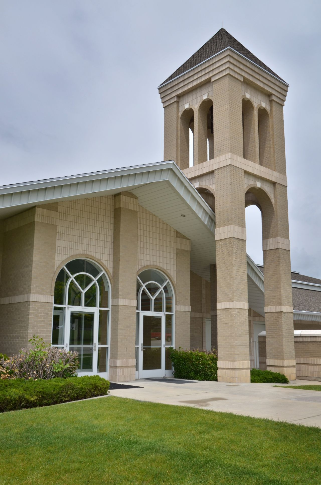

Click on the chapel doors.
The chapel doors seem to say to me, “Sh, be still.” For this is a reverent place to be, “Sh, be still.” We gather here on the Sabbath day To learn of Jesus, to sing and pray. So when we come through the chapel doors, “Sh, be still.”